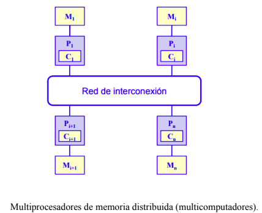

Cada procesador tiene su propia memoria y la comunicación se
realiza por intercambio explícito de mensajes a través de una red.

Ventajas
- El número de nodos puede ir desde algunas decenas hasta
varios miles (o más).
- La arquitectura de paso de mensajes tiene ventajas sobre la de
memoria compartida cuando el número de procesadores es
grande.
- El número de canales físicos entre nodos suele oscilar entre
cuatro y ocho.
- Esta arquitectura es directamente escalable y presenta un bajo
coste para sistemas grandes.
- Un problema se especifica como un conjunto de procesos que
se comunican entre sí y que se hacen corresponder sobre la
estructura física de procesadores.
Desventajas
- Se necesitan técnicas de sincronización para acceder a las
variables compartidas.
- La contención en la memoria puede reducir significativamente
la velocidad.
- No son fácilmente escalables a un gran número de
procesadores.